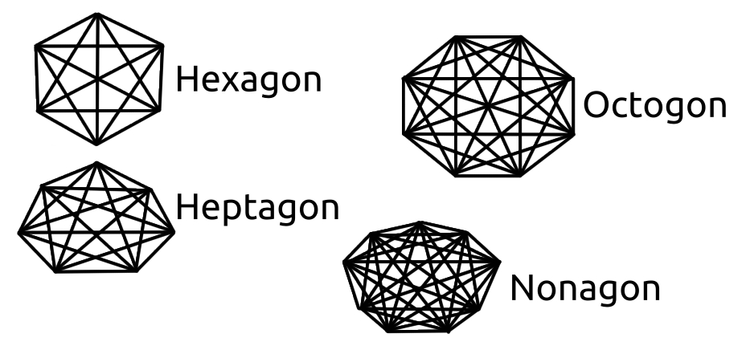

We need a concept called "powers" to learn how probability actually applies to equations, but, in essence, it has to do with the ways you can combine letters, just like you can combine points.
'A' and 'B', so you have 'AB' and 'BA', and if you count repeating letters, there are also 'AA' and 'BB', which are no longer called combinations of 'A' and 'B', but permutations, because you are "per", Latin for "through", brute-forcing every way you can arrange A and B. This is like a game, where you can start at either A or B, and then, for each of these, you can stay where you are, or make one move.
So, for the staying options, you will have 'AA' and 'BB', and for the moving options, you will have 'AB' and 'BA'. If you had another chance to move, and still had just two points, you would have eight possible games. Speaking of powers, this is called two to the third power, two times two times two.
When we get to more complex numbers such as how many chess games there are, these numbers become a size where you can say "billions of billions of..." many times. Games such as "Go", which typically uses a bigger board than chess, become very unpredictable.
Behold some cool shapes:
A hexagon, heptagon, octogon, and nonagon. A hexagon has nine diagonals and six sides, so 15 total; A heptagon has 14 diagonals and seven sides, so 21 total; An octogon has 20 diagonals and eight sides, so 28 total; A nonagon has 27 diagonals and nine sides, so 36 total.
The human face sort of feels like a nonagon, on touch. I guess humans are, truly, balanced by nature... One thing that's really cool about what we've just discussed is that the "sides of the shape" and "sum of sides and diagonals" are the first two numbers you'll find in the rows of Pascal's triangle, page 3.